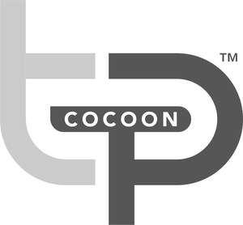

Trade Mark Journal No.2025/021 23 May 2025
UK00004194178 25 April 2025 (10)

- Class 10
- Air beds for medical purposes; Air cushions for medical purposes; Alternating pressure mattresses for medical use; Alternating pressure pads for medical use; Alternating pressure supports for medical use; Ambulance stretchers; Apparatus for medical rehabilitation; Apparatus for orthopaedic purposes; Apparatus for physical training for medical use; Sheets [drapes] for medical use; Sheets [drapes] for use in surgery; Slides for surgical use; Slings for medical use; Slings for patient lifting hoists; Slings for supporting injured limbs; Slings specially adapted for transporting persons with disabilities; Slings [supporting bandages]; Sores (Pads [pouches] for preventing pressure -) on patient bodies; Special furniture for medical use; Splinting bandages for preparing casts; Splinting bandages for preparing splints; Splinting for orthopaedic use; Splinting materials for medical use; Splinting materials for surgical use; Splinting (Supportive -) for medical use; Splints [for medical purposes]; Splints for medical use; Splints for surgical use; Splints, surgical; Sponge material for surgical use; Sterile sheets, surgical; Sterilised sheets for use on patients during surgery; Stretcher straps; Stretchers; Stretchers (Ambulance -); Stretchers [for patient transport]; Stretchers, wheeled; Support bandages; Support bandages for medical purposes; Support mattresses for medical use; Support mattresses for preventing pressure sores; Warmers for medical use; Heat beds for medical treatment; Heat pads for therapeutic treatment; Heat therapy apparatus; Heat therapy instruments; Heat treatment apparatus; Heating cushions, electric, for medical purposes; Heating cushions [pads], electric, for medical purposes; Heating cushions [pads], non-electric for medical purposes; Heating pads, electric, for medical purposes; Hot air therapeutic apparatus; Hot air vibrators for medical purposes; Hot therapy apparatus; Hot therapy instruments; Chairs especially made for medical use; Cushioning devices for medical use; Cushions for medical purposes; Cushions (Heating -), non-electric for medical purposes; Cushions [pads] (heating -), for medical purposes; Beds for surgical use; Beds (Hydrostatic [water] -) for medical purposes; Beds, specially made for medical purposes; Beds specially made for medical purposes; Beds specially made for use by burn patients; Temperature indicator labels for medical purposes; Temperature sensors for medical use; Thermal packs for first aid purposes; Cushioning devices for medical use; Sensor apparatus for medical use in diagnosis; Telemetry apparatus for medical use; Diagnostic apparatus for medical purposes; Body warming devices for medical use; Physiological monitoring apparatus for medical use.
Thermotraumaport Ltd